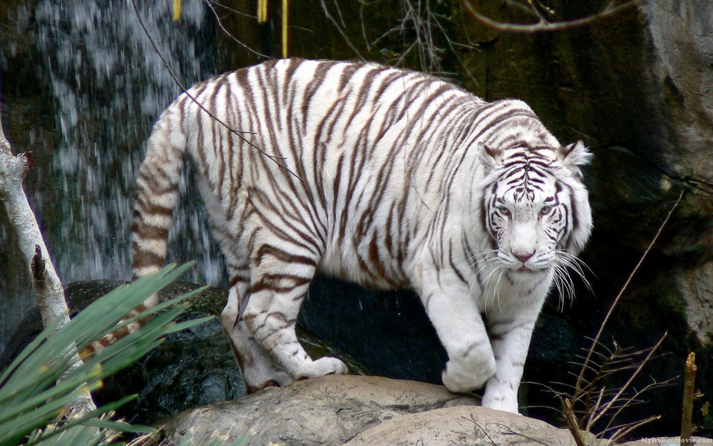

Происхождение белых тигров
Белый тигр – это бенгальский тигр с необычной белой окраской шерсти, обусловленной генетической мутацией. Отличительные черты белых тигров от обычных бенгальских – кремово-белая шерсть с чёрно-коричневыми или серыми полосами и часто голубые глаза (рис. 1). Такая окраска возникает из-за лейцизма – наследственной мутации, приводящей к частичной потере пигментации.

рис.1
Вопреки распространённому мнению, белый тигр не является отдельным видом или подвидом, а представляет собой лишь редкую цветовую вариацию бенгальского тигра.
Часто ошибочно принимают белых тигров за альбиносов, однако это неверно: альбиносы полностью лишены меланина, на их шерсти отсутствуют полосы, а глаза имеют красный цвет, в то время как у белых тигров сохраняется темный пигмент в полосах и нормальный цвет глаз [1].
Упоминания о белых тиграх встречаются в индийских источниках с древних времён. Первые записи, как считается, датируются XVI веком – имеются свидетельства о встречах с подобными необычными тиграми на Индийском субконтиненте. В те времена белый тигр считался почти мифическим существом, редчайшей добычей для охотников. Шкуры белых тигров высоко ценились знатью и колонизаторами, а наблюдения живых особей были крайне редки. На рубеже XIX–XX веков неоднократно сообщалось о поимке или отстреле белых тигров в Индии, однако научного подтверждения этим сообщениям почти не было [2].
Махан из Ревы – родоначальник белых тигров (прил. 1). Поворотным моментом стало появление Махана – знаменитого белого тигра-самца, пойманного тигрёнком в 1951 году в джунглях княжества Рева (Центральная Индия). 15-летний наследный принц Мартианд Сингх выкупил этого редкого белого тигрёнка у местного охотника, когда вся его семья (мать и обычные окрашенные братья) была застрелена во время охоты. Махан стал первым белым тигром, сохранённым живым и попавшим в неволю. Осознав уникальность находки, правители Ревы предприняли попытку получить от него потомство с такой же окраской. Сначала Махана спаривали с обычными рыжими тигрицами – эти попытки не приносили белых детёнышей. Однако рождённые тигрята унаследовали мутантный ген скрытно (стали носителями). После этого Махана скрестили с одной из его подросших рыжих дочерей-носителей – такой близкородственный шаг был оправдан редкостью мутации. Рискованный эксперимент увенчался успехом: в 1958 году от Махана и его дочери родился первый помёт (выводок) из четырёх тигрят, один из которых был белым. Это доказало наследование и воспроизводимость мутации. Белого тигрёнка назвали Раджкумари. В следующем, 1959 году, пара Махан и дочь дала ещё один помёт – на этот раз все четверо тигрят оказались белыми. Так началась династия белых тигров в неволе. Все современные белые тигры происходят от Махана по прямой или через скрещивания – генеалогия прослеживается на 11 поколений вперёд. Фактически все белые тигры мира – родственники, потомки одного-единственного самца, пойманного в Индии в 1951.
ХХ век: селекция и популяризация
Распространение по миру. Потомки Махана быстро разошлись по зоопаркам Индии и за её пределы. Уже в 1960-е белые тигры стали демонстрироваться широкой публике. В 1960 году одна из дочерей Махана, Мохини, была подарена Национальному зоопарку в Вашингтоне, где произвела фурор. Ради увеличения числа белых тигров применяли схему разведения с близкородственными скрещиваниями: сначала Мохини спарили с обычным тигром (получили рыжих носителей), а затем её потомков вязали внутри линии, чтобы вывести белых детёнышей. В последующие десятилетия белые тигры появились во многих зоопарках мира: их редкая и эффектная окраска делала их популярными экспонатами и привлекала толпы посетителей. Если в 1970-е годы в мире насчитывались лишь считанные десятки белых тигров, то к 1990-м их число возросло до нескольких сотен.
Независимая линия в Индии. В 1980 году зоопарк Нанданканан (штат Одиша) получил сенсационную тройню белых тигрят от пары рыжих бенгальских тигров Дипак и Ганга, не связанных с линией Махана. Оба родителя оказались скрытыми носителями мутации. Так был сформирован второй, частично независимый генофонд белых тигров, что внесло некоторое генетическое разнообразие в общую популяцию.
Селекция и её цена. Закрепление редкой белой окраски в XX веке опиралось преимущественно на целенаправленный отбор носителей и близкородственное разведение (инбридинг). К этому прибегали потому, что мутантный ген чрезвычайно редок, а неродственных носителей почти не было. Такая практика позволила быстро «раскрутить» белую морфу и превратить её в мировую зоопарковую знаменитость, но одновременно привела к накоплению наследственных проблем у многих линий.
Этика и дискуссии
Тема белых тигров давно перестала быть исключительно научной или зоологической — она вышла в сферу общественных обсуждений и споров. С одной стороны, эти животные вызывают восхищение своей красотой и редкостью, становятся символами зоопарков и настоящими «звёздами» шоу-программ. С другой стороны, именно вокруг них возникают серьёзные вопросы о допустимости методов, которыми поддерживается их существование. Насколько оправдано использование близкородственных скрещиваний ради внешнего эффекта? Можно ли считать белых тигров объектом сохранения природы, если в дикой среде их больше не существует? Или это скорее пример того, как человек искусственно «создаёт» редкость, а затем использует её в коммерческих целях?
Подобные вопросы неизменно приводят к жарким дискуссиям — среди учёных, экологов, защитников животных и широкой публики. Одни считают белых тигров уникальным наследием, которое нужно поддерживать, другие же указывают на этическую проблемность такого подхода и предлагают сосредоточиться на сохранении естественных популяций тигров.
Ниже приведены ссылки на материалы и обсуждения, где эти точки зрения рассматриваются подробнее и противопоставляются друг другу.
1. Duke University Science & Society
Статья «A Tiger By the Tail» затрагивает моральную дилемму, связанную с белыми тиграми:
«Белые тигры привлекают большое внимание публики... но это внимание даётся ценой — ради появления белого тигра приходится разводить множество болезненных особей, поддерживая нечестных заводчиков... И обучение общества мифам — это плата за «экзотический трюк»?»
2. Wild Welfare (зоозащитная организация)
Чёткий этический выпад:
«Белые тигры не служат никакой цели в сохранении вида и используются исключительно из-за «миловидности». Продолжение их разведения вводит публику в заблуждение и не помогает дикой популяции, число которой может быть всего ~2 500 зрелых особей.»
3. The Hindu (индийское СМИ)
Опыт Nehru Zoological Park вызвал тревогу у экспертов:
Белые тигры, полученные в результате жесткого инбридинга, характеризуются нарушениями иммунитета и наследственностью с опухолями, сниженной продолжительностью жизни.
Представители AZA и WAZA также выступают против их разведения.
4. Scientific American
Документально подтверждённые факты:
Практика интенсивного инбридинга: родитель-на-дочь, брат-на-сестру.
Более 80 % сильно инбредных тигрят умирают вскоре после рождения.
Проблемы со здоровьем: уменьшенный размер выводка, короткий срок жизни, дефекты изгиба позвоночника, органов, зрения, иммунитета.
AZA (Association of Zoos & Aquariums) с 2011 года официально запретила такое разведение.
5. Big Cat Rescue
Невыносимо жёсткое слово:
«Разведение белых тигров — это аберрация, которую искусственно поддерживают зоопарки ради шоу. Это противоречит основам любых программ по сохранению видов. Ответственные действия по сохранению — это защита среды обитания, а не разведение 'дефектных' животных для развлечения.»
6. Wildcat Sanctuary
Самое жёсткое:
«Это варварская практика, направленная исключительно на визуальную привлекательность: мать со своим сыном... ради желания публики ухватиться за эстетичный феномен, пренебрегая здоровьем. Это не консервация, а эксплуатация.»
Общественное мнение и Reddit-дискуссии
Ниже — выдержки живых обсуждений с Reddit, отражающие точки зрения обычных людей и энтузиастов:
На r/YouShouldKnow:
«Все белые тигры — инбред. Они гораздо чаще рождаются с расщелиной неба, искривлениями позвоночника, психическими нарушениями, косоглазием.»
На r/AnimalRights:
«Проблемы включают дисплазию тазобедренного сустава, глухоту, слепоту, неврологические расстройства, иммунную слабость... белый — это не модификация, а страдание.»
На r/aww:
«После белых тигрят в зоопарке — почти наверняка это коммерческое звероводство, жестокость под видом шоу. AZA запретил их разведение уже более десяти лет назад. Белая окраска считается генетическим заболеванием.»
На r/evolution:
Наблюдается более рассудительное обсуждение: «Белая окраска сама по себе не дефект, но может быть связана с неврологическими проблемами. Если белый тигр в дикой природе — генетически ценный, здоровый — возможно, стоит сохранить. Но инбридинга — ни в коем случае.»
Белые тигры сегодня
На 2020-е годы белые тигры содержатся в неволе в различных странах мира, в основном в зоопарках и парках дикой природы. Крупнейшая популяция находится в Индии (около 100 особей), где их продолжают разводить в нескольких зоопарках (Дели, Нанданканан и др.) в качестве привлекательных экспонатов. В США также содержится значительное число белых тигров – десятки особей, главным образом в частных зоопарках и шоу-парках. В конце XX века особую известность получило шоу Зигфрида и Роя в Лас-Вегасе, где белые тигры были главными звёздами представлений, что во многом сформировало миф о «магических» тиграх.
Белые тигры также присутствуют в зоопарках Китая, Европы и на Ближнем Востоке — всего по миру их порядка двух сотен. Ни один из этих тигров не обитает в природе. Их нередко называют «Royal White Tiger» («королевский белый тигр») — это скорее маркетинговый термин, отсылающий к названию подвида бенгальского тигра (Royal Bengal Tiger), чем научное определение. Уникальная окраска сделала белых тигров объектом массового внимания публики, однако для поддержания их популяции в неволе на протяжении десятилетий широко использовались методы близкородственного разведения, что привело к серьёзным генетическим проблемам.
Источники информации
1. Azzedine Downes – “Tragedy of the White Tiger”, Scientific American.
2. Leigh Henry – “The truth about white tigers”, WWF.
3. Ed Yong – “Tiger, Tiger, Burning Bright, Just One Gene To Make It White”, National Geographic.
4. Шамиль Тьенмуцаев – «Белый тигр больше не мутант», Газета.Ru (Наука).
5. Белый тигр – статья в русской Википедии.
6. White Tigers: Facts, Threats, & Conservation, IFAW.
7. White delight for Nandankanan, The New Indian Express.
8. Reference.com – How Many White Tigers Are Left in the World?